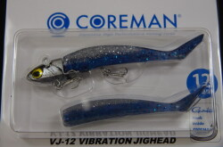
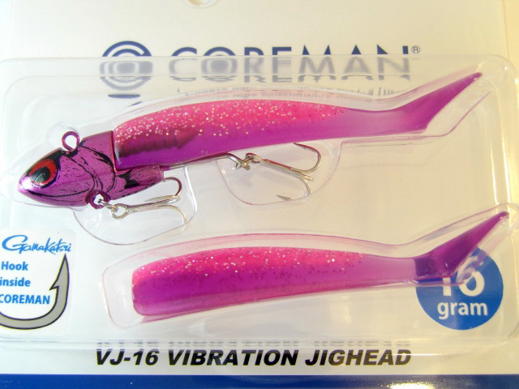
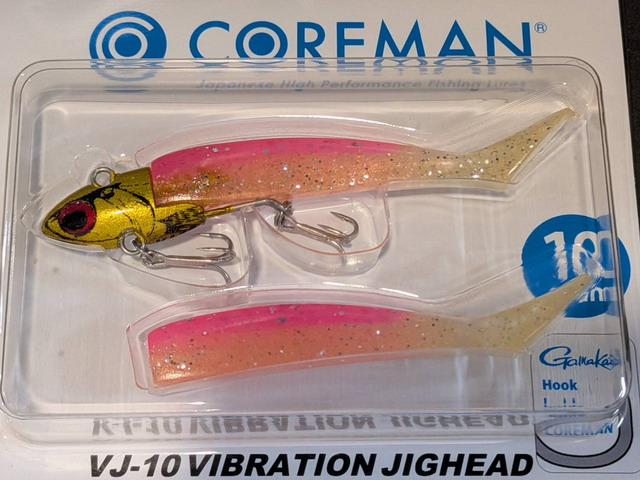
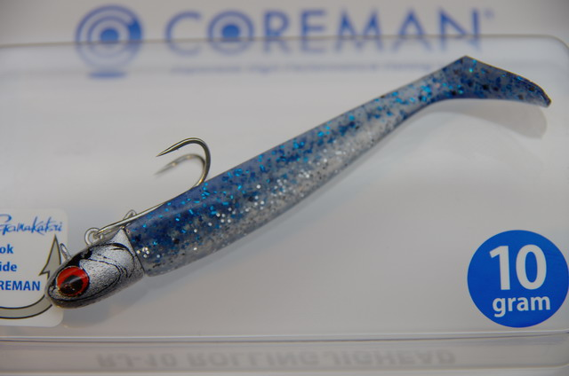

VJ-12
VJ-12（VIBRATION JIGHEAD 12）はCOREMAN（コアマン）のバイブレーションジグヘッドです。
シーバスデイゲームを革新した名作「VJ-16」に、2023年に追加された軽量12gモデル。基準となるVJ-16よりアクションが大きく千鳥りもワイドになり、浮き上がりの早さで水面直下のシャローを広範囲に探れる。「もう一段上のレンジ」を担当する、VJシリーズの引き出しを広げる一本です。

画像出典:キングフィッシャー
スペック
- メーカー
- COREMAN（コアマン）
- タイプ
- バイブレーションジグヘッド（ジグヘッド＋ワーム）
- 全長
- 90 mm
- ヘッドウェイト
- 12 g
- リング
- コアマン オリジナル #1
- フック
- がまかつ トレブル13 #12
- ワーム
- アルカリシャッド 75mm
- ターゲット
- シーバス・青物・フラットフィッシュ
- 入り数
- ジグヘッド1個＋ワーム2本
- 価格
- 1,650円前後（税込）
- 発売
- 2023年
▼今すぐチェック
VJ-12の特徴
「VJ-16より浅く、よりワイドに」——水面直下を攻める軽量モデル
-
浮き上がりが早く水面直下のシャローを引ける
12gという軽量設定で浮き上がりが早く、VJ-16では沈みすぎてしまう水面直下〜浅いレンジをキープしたまま引ける。表層のベイトを捕食しているがトップには出ないシーバスに、ワームの食わせ能力でアプローチできる。ボディ・ワームのサイズはVJ-16と共通。
-
VJ-16よりアクションが大きく千鳥りもワイド
軽量ゆえにボディの動きが大きくなり、不規則に千鳥る（ダートするように左右に振れる）動きもよりワイドに。この不規則なイレギュラーアクションがスレたシーバスのリアクションバイトを誘発する。同じVJでも16gとは異なるアピールを演出できる。
-
ワームが振動するVJ唯一無二の食わせ能力
経験によって導き出されたジグヘッドデザインと、装着するアルカリシャッドのマッチングでボディ全体が絶妙に揺れるVJアクション。圧倒的な食わせ能力を持つソフトなワームが細かく振動し、プラグを見切ったシーバスすら口を使わせる。この核心性能はVJ-12でも健在。
VJ-12の使い方
基本はただ巻き。着水後にカウントを入れずすぐ巻き始めれば水面直下を、少しカウントを取ればやや下のレンジをトレースできる。VJ-16より浮き上がりが早いので、シャローエリアでは糸を張り気味にして表層をキープするイメージ。ただ巻きのスピードは魚の反応を見て調整し、反応がなければ軽くリフト＆フォールを入れると千鳥アクションが強調されてバイトのきっかけになる。使用前にワームがまっすぐ刺さっているかスイムチェックし、傾きがあれば刺し直してバランスを整えることが釣果への近道。
VJ-12の得意な状況
水深の浅いシャローフラット・干潟・河川の浅場・水面直下にベイトが溜まる状況が主な出番。特に表層のベイトを意識しているのにトップやプラグには反応しないシーバスに滅法強い。VJ-16では引っかかってしまう浅いポイントを、根掛かりを抑えながら広範囲にサーチできる。プラグを一通り通した後の「フォロー」として投入し、スレた個体を拾っていく使い方でも活躍する。
ワンポイント
VJは真っ直ぐワームを刺しても千鳥らないことがあるため、必ず一度スイムチェックして微調整するのがVJ使いの鉄則。千鳥っていても斜めに傾いている場合は刺し直す。フックは標準のがまかつトレブル13 #12のままで食わせ能力・掛かりともに完成されているが、青物やフラットフィッシュを本命にする時は太軸への交換も選択肢。
VJシリーズの使い分け
| モデル | 全長/ウェイト | 得意なレンジ・場面 |
|---|---|---|
| VJ-12 | 90mm / 12g | 水面直下・シャロー・ワイドな千鳥（軽量モデル） |
| VJ-16 | 90mm / 16g | 水深3m前後・オールラウンド（シリーズの基準） |
| VJ-22 | 110mm / 22g | 水深3mより下の中層以下・飛距離・流れの強い場所 |
| VJ-28 | 110mm / 28g | 最長飛距離・最深レンジキープ・大場所/ボート |
VJ-12は「VJ-16より一段上のレンジ」を担当する軽量モデル。同じ90mmボディ・同じワームのまま浮き上がりの早さとワイドな千鳥アクションで浅場を攻められるため、VJ-16と2個持ちしてレンジを刻むのが定番の使い方だ。
VJ-12に似ているルアー
-

VJ-16 コアマン 詳細はこちら＞シリーズの基準モデル。VJ-12より一段深い水深3m前後のオールラウンド。まず1個持つならこちらだが、シャロー攻略ではVJ-12が上をいく。
-

VJ-10 コアマン 詳細はこちら＞さらに軽い10gの最軽量モデル。VJ-12でも沈む激浅・藻の上を攻めたい時に。
-

RJ-10 コアマン 詳細はこちら＞同じ食わせ系ジグヘッドだがローリング特化。VJ-12がバイブレーション、RJ-10がドリルロールとアクションで使い分けられる。